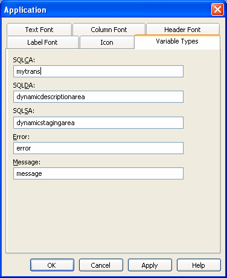

You specify application properties in the Application painter's Properties view.
 To specify application properties:
To specify application properties:
In the Application painter, if the Properties view is not open, select View>Properties from the menu bar.
With the exception of the AppName property, the properties on the General and Toolbar tab pages can be modified in the Properties view and in scripts.
If you need help specifying properties in the Properties View, right-click on the background of the Properties view and select Help from the pop-up menu.
Select the General or Toolbar tab page, or, on the General tab page, click the Additional Properties button to display the Application properties dialog box.
The additional properties on the Application properties dialog box can be modified only in this dialog box. They cannot be modified in scripts.
Specify the properties:
These sections have information about how you specify the following application properties in the Application painter:
You probably want to establish a standard look for the text in your application. There are four kinds of text whose properties you can specify in the Application painter: text, header, column, and label.
PowerBuilder provides default settings for the font, size, and style for each of these and a default color for text and the background. You can change these settings for an application in the Application painter and can override the settings for a window, user object, or DataWindow object.
 Properties set in the Database painter override application
properties If extended attributes have been set for a database column
in the Database painter or Table painter, those font specifications
override the fonts specified in the Application painter.
Properties set in the Database painter override application
properties If extended attributes have been set for a database column
in the Database painter or Table painter, those font specifications
override the fonts specified in the Application painter.
 To change the text defaults for an application:
To change the text defaults for an application:
In the Properties view, click Additional Properties and select one of the following:
The tab you choose displays the current settings for the font, size, style, and color. The text in the Sample box illustrates text with the current settings.
Review the settings and make any necessary changes:
 Using custom colors When specifying a text color, you can choose a custom color.
You can define custom colors in several painters, including the
Window painter or DataWindow painter.
Using custom colors When specifying a text color, you can choose a custom color.
You can define custom colors in several painters, including the
Window painter or DataWindow painter.
When you have made all the changes, click OK.
Users can minimize your application during execution. If you specify an icon in the application painter, the icon will display when the application is minimized.
 To associate an icon with an application:
To associate an icon with an application:
In the Properties view, click Additional Properties and select the Icon tab.
Specify a file containing an icon (an ICO file).
The button displays below the Browse button.
Click OK to associate the icon with the application.
PowerBuilder provides five built-in global objects that are predefined in all applications.
You can create your own versions of these objects by creating a standard class user object inherited from one of the built-in global objects. You can add instance variables and functions to enhance the behavior of the global objects.
For more information, see Chapter 15, "Working with User Objects ."
After you do this, you can tell PowerBuilder that you want to use your version of the object in your application as the default, instead of the built-in version.
 To specify the default global objects:
To specify the default global objects:
In the Properties view, click Additional Properties and select the Variable Types tab.
The Variable Types property page displays.
Specify the standard class user object you defined in the corresponding field.
For example, if you defined a user object named mytrans that is inherited from the built-in Transaction object, type mytrans in the box corresponding to SQLCA.

Click OK.
When you run your application, it will use the specified standard class user objects as the default objects instead of the built-in global objects.